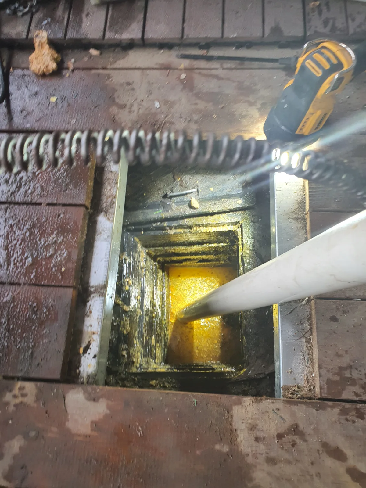
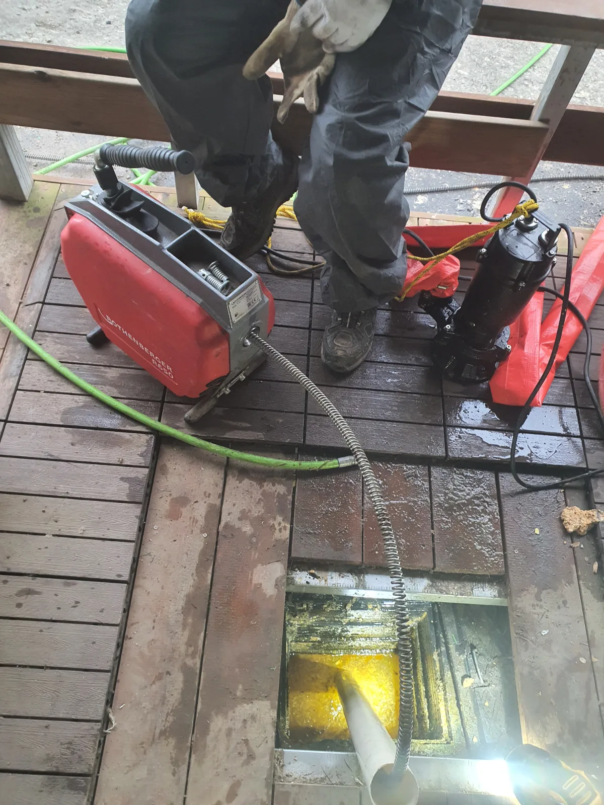

양평군 지평면 월산리 하수구막힘, 현장 도착 후 진단
경기 양평군 지평면 월산리 하수구막힘 현장에 도착해 집수정 내부부터 확인했습니다.
집수정은 외부 배수와 연결되는 구간이라 낙엽, 흙, 생활 찌꺼기가 유입되기 쉽습니다. 이런 오염물이 쌓인 채 방치되면 집수정 안에 물이 고이고 연결 배수라인까지 막힘이 진행될 수 있습니다.
이번 월산리 현장도 집수정 안쪽에 고인 물과 이물질이 확인돼 입구 주변만 정리하는 것이 아니라 연결된 배수라인까지 함께 작업해야 했습니다. 신라건축설비는 하수구막힘 현장에서 물이 고인 위치와 배관 구조를 먼저 확인한 뒤 적합한 장비와 작업 순서를 정합니다.
1단계: 증상 확인과 필요한 장비 작업
집수정 안에 고인 물과 주변 이물질을 먼저 정리해 작업 공간을 확보했습니다.
집수정 내부에는 낙엽과 생활 찌꺼기, 오염물이 함께 쌓여 있었습니다. 눈에 보이는 이물질만 제거하면 연결 배수라인 안쪽에 남은 찌꺼기 때문에 같은 증상이 반복될 수 있어, 구동기와 스프링 장비를 준비했습니다.

2단계: 원인 구간 처리와 정상 작동 확인
구동기에 스프링 장비를 연결해 집수정 배수라인 안쪽으로 투입했습니다.
스프링을 회전시키며 배수라인 안쪽의 막힘 구간과 잔여 오염물을 정리했습니다. 작업 중 나온 오염물과 이물질은 별도로 회수하고, 집수정 주변에 물을 흘려보내 배수라인의 물 빠짐 상태를 확인했습니다.

작업 결과와 재발 방지 안내
이번 양평군 지평면 월산리 하수구막힘 현장은 집수정 내부의 고인 물과 오염물을 정리하고, 구동기와 스프링 장비를 조합해 연결 배수라인까지 작업한 사례입니다. 작업 후 집수정과 배수라인의 물 빠짐을 확인해 배수 흐름을 확보했습니다.
집수정 하수구막힘은 왜 반복될까요? 외부에서 유입된 낙엽과 흙, 생활 찌꺼기가 집수정에 쌓인 상태로 방치되면 연결 배수라인까지 영향을 줄 수 있기 때문입니다. 집수정 주변에 물이 계속 고이거나 배수가 늦어진다면 막힘이 심해지기 전에 점검하는 것이 좋습니다.
집수정 주변의 낙엽과 이물질은 수시로 정리하고, 고인 물이나 배수 불량이 반복된다면 집수정 내부뿐 아니라 연결 배수라인까지 함께 확인해야 합니다.
신라건축설비는 양평군 지평면 월산리를 비롯한 서울과 경기권 하수구막힘 현장에 신속하게 출동합니다. 생활 하수구막힘부터 집수정, 배관 내시경 점검, 석션, 샤프트, 고압세척, 공용배관과 오수관 문제, 배관 보수와 교체공사까지 현장 상황에 맞춰 대응합니다.
최종 조치: 집수정 내부의 고인 물과 오염물을 정리한 뒤 구동기와 스프링 장비를 배수라인에 투입했습니다. 작업 후 집수정과 연결 배수라인의 물 빠짐 상태를 확인해 배수 흐름을 확보했습니다.
현장 방문 전 확인하는 비용과 작업 범위
신라건축설비는 현장 증상과 배관 구조를 확인한 뒤 필요한 작업과 예상 비용을 안내합니다. 단순 관통으로 해결되는지, 배관내시경·석션·고압세척 또는 추가 장비가 필요한지는 현장 상태에 따라 달라집니다. 출장비와 야간 작업비, 추가 장비 비용이 발생할 수 있는 경우 작업 전에 먼저 설명하고 동의를 받은 범위에서 진행합니다.
업체를 선택할 때 확인할 사항
무조건적인 ‘0원’ 표현보다 실제 작업 범위, 추가 비용 조건, 사용 장비와 사후 대응 기준을 확인하는 것이 중요합니다. 해결되지 않았을 때의 비용 기준과 작업 후 동일 증상 발생 시 점검 범위를 사전에 문의해두면 불필요한 분쟁을 줄일 수 있습니다.
양평군 하수구막힘 자주 묻는 질문
하수구막힘은 왜 반복되나요?
양평군 지평면 월산리 현장처럼 집수정 내부에 물과 오염물, 생활 찌꺼기가 쌓여 배수 흐름이 원활하지 않은 상태였습니다. 증상은 원인이 현장마다 다를 수 있습니다. 배관 내부 기름 슬러지·생활 오염물·스케일이 충분히 제거되지 않았거나 오수관·공용배관 구간에 문제가 있으면 반복될 수 있습니다. 재발 시 막힌 위치와 배관 상태를 함께 확인합니다.
하수구가 역류하거나 물이 안 내려가면 하수구뚫는업체를 불러야 하나요?
바닥 배수구가 역류하거나 여러 배수구에서 동시에 물이 빠지지 않으면 단순 배수구 막힘보다 깊은 배관이나 공용배관 문제일 수 있습니다. 전문 장비로 원인 구간을 확인하는 것이 좋습니다.
여러 배수구가 동시에 막히면 공용배관이나 오수관 문제인가요?
동시에 여러 곳에서 배수 불량과 역류가 발생하면 메인배관·오수관·공용배관을 의심할 수 있지만 건물 구조마다 다릅니다. 배관내시경과 현장 진단으로 구간을 구분합니다.
하수구뚫는업체는 어떤 장비로 작업하나요?
현장에 따라 샤프트, 석션, 배관내시경, 고압세척 장비 등을 사용합니다. 단순 관통이 필요한지 배관 내부 세척까지 필요한지는 오염 상태와 막힘 원인에 따라 판단합니다.
하수구 고압세척은 언제 필요한가요?
기름 슬러지나 배관 내부 오염이 넓게 쌓여 반복 막힘이 생기는 경우 고압세척이 효과적일 수 있습니다. 모든 하수구막힘에 고압세척을 적용하는 것은 아니며 먼저 배관 상태를 확인합니다.
하수구막힘 비용은 어떻게 정해지나요?
막힌 위치, 배관 길이와 구경, 공용배관 여부, 내시경·샤프트·고압세척 등 장비 투입 범위에 따라 달라집니다. 추가 작업이 필요한 경우 진행 전에 범위와 비용을 안내합니다.
하수구막힘 서울·경기 출동지역
신라건축설비는 양평군 지평면 월산리 현장을 포함해 서울 25개 구와 경기도 31개 시·군의 배관 문제를 상담합니다. 현장 거리와 기사 배정 상황에 따라 출동 가능 여부를 먼저 안내드립니다.
서울 전 지역
강남구 · 강동구 · 강북구 · 강서구 · 관악구 · 광진구 · 구로구 · 금천구 · 노원구 · 도봉구 · 동대문구 · 동작구 · 마포구 · 서대문구 · 서초구 · 성동구 · 성북구 · 송파구 · 양천구 · 영등포구 · 용산구 · 은평구 · 종로구 · 중구 · 중랑구
경기도 주요 출동지역
수원시 · 용인시 · 고양시 · 화성시 · 성남시 · 부천시 · 남양주시 · 안산시 · 평택시 · 안양시 · 시흥시 · 파주시 · 김포시 · 의정부시 · 광주시 · 하남시 · 광명시 · 군포시 · 양주시 · 오산시 · 이천시 · 안성시 · 구리시 · 의왕시 · 포천시 · 양평군 · 여주시 · 동두천시 · 과천시 · 가평군 · 연천군